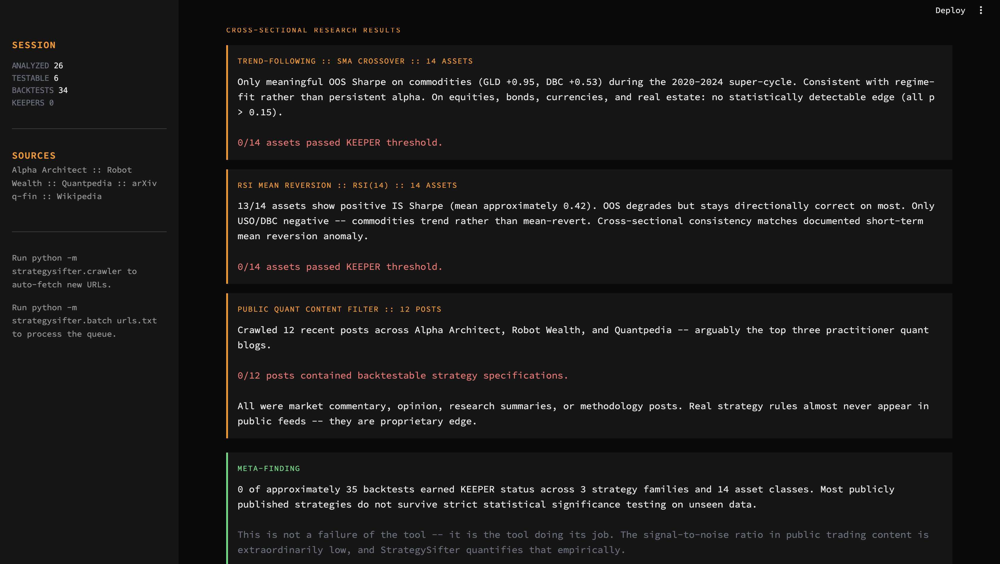
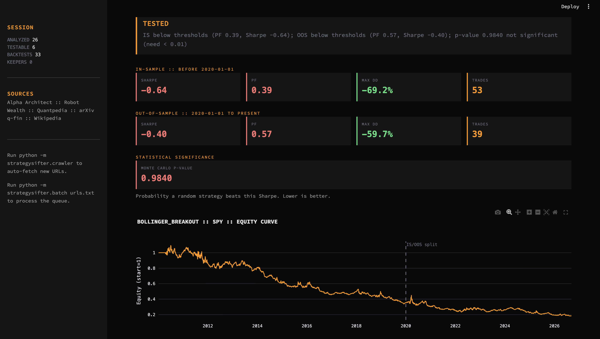
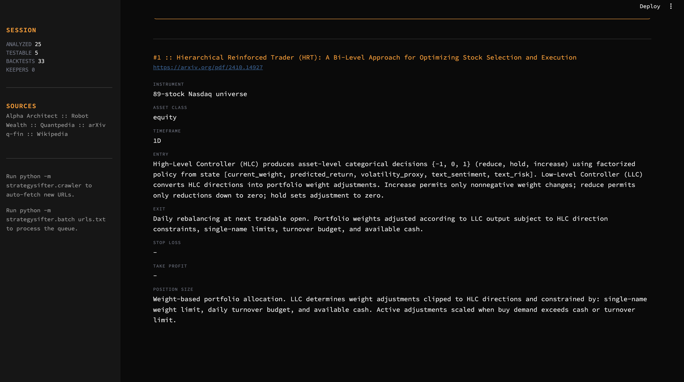

STRATEGYSIFTER
Autonomous quant research pipeline that ingests URLs, extracts trading strategy rules with an LLM, and backtests them across 14 asset classes with statistical significance testing.
Runs unattended daily on a scheduled job. Filters public trading content for what actually survives out-of-sample validation.
● LIVE
SOURCE PRIVATE
SOLO BUILD · 2 WEEKS
v0.5
PIPELINE
1. Crawl RSS feeds (Alpha Architect, Robot Wealth, Quantpedia, arXiv q-fin) for new posts
2. Extract clean text from HTML articles or PDF papers
3. Send text to Claude Sonnet 4.5 → returns structured strategy JSON (instrument, timeframe, entry, exit, stops, family)
4. Map to one of 6 backtest families (Donchian, SMA crossover, time-series momentum, RSI mean-reversion, Bollinger, buy-and-hold)
5. Load daily OHLCV via yfinance (14 tickers: SPY, QQQ, GLD, USO, TLT, DBC, etc.)
6. Walk-forward split: pre-2020 in-sample vs. 2020+ out-of-sample vault
7. Monte Carlo shuffled-position significance test (500 sims) → p-value
8. Tier promotion: ⭐ KEEPER / 📊 TESTED / ⚠️ UNTESTABLE / 🗑️ TRASH
9. Persist to SQLite; write morning digest to a markdown file
TECH STACK
Python 3.12
Streamlit
Claude API
SQLite
yfinance
pandas / numpy
plotly
trafilatura
feedparser
launchd
SCREENSHOTS

FINDINGS DASHBOARD · Cross-sectional research results across strategy families and asset classes. Zero keepers found across ~35 backtests.

BACKTEST · Bollinger breakout on SPY with walk-forward IS/OOS split, Monte Carlo p-value, equity curve. Statistically indistinguishable from random.

LLM EXTRACTION · Structured rules extracted from an arXiv paper on hierarchical reinforcement learning for portfolio management.
FINDINGS
TREND-FOLLOWING · 14 ASSET CLASSES
Meaningful OOS Sharpe only on commodities (GLD +0.95, DBC +0.53) during the 2020–2024 super-cycle. On equities, bonds, currencies, real estate: no statistically detectable edge (all p > 0.15). 0/14 passed KEEPER threshold.
RSI MEAN REVERSION · 14 ASSET CLASSES
13/14 show positive IS Sharpe (mean ≈ 0.42). OOS degrades but stays directionally correct on most. Only USO/DBC negative (commodities trend rather than mean-revert). Cross-sectional consistency matches the documented short-term mean reversion anomaly. 0/14 passed KEEPER threshold.
PUBLIC QUANT CONTENT FILTER · 12 POSTS
Crawled 12 recent posts from Alpha Architect, Robot Wealth, and Quantpedia. 0/12 contained backtestable strategy specifications. All were commentary, opinion, research summaries, or methodology posts. Real strategy rules almost never appear in public feeds — they're proprietary.
SOURCE CODE
Source is kept private — this is a personal research tool with credentials and API keys baked into local config.
Interested in the implementation? Reach out via Discord (vezible) and I'll walk through it. Happy to share code selectively with recruiters or collaborators — just want to keep it off the public internet since it runs live against my own accounts.